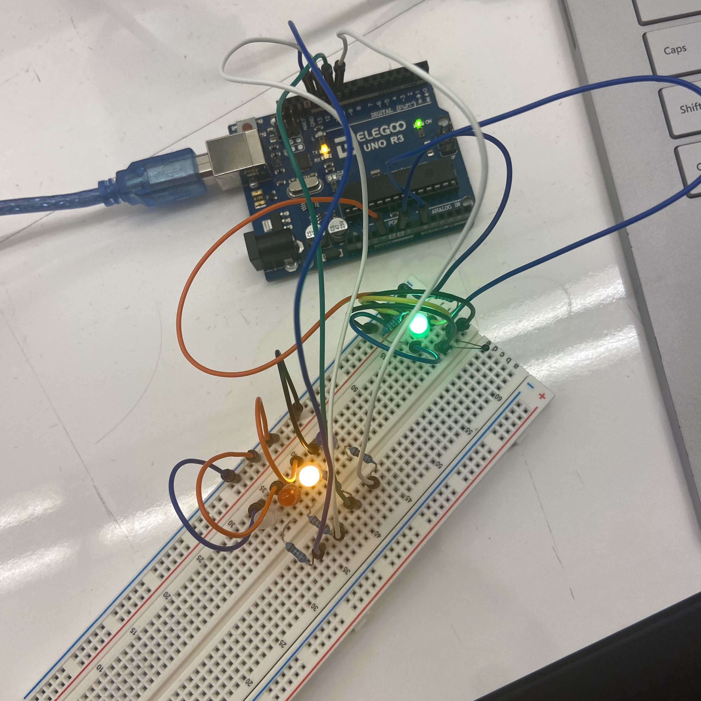
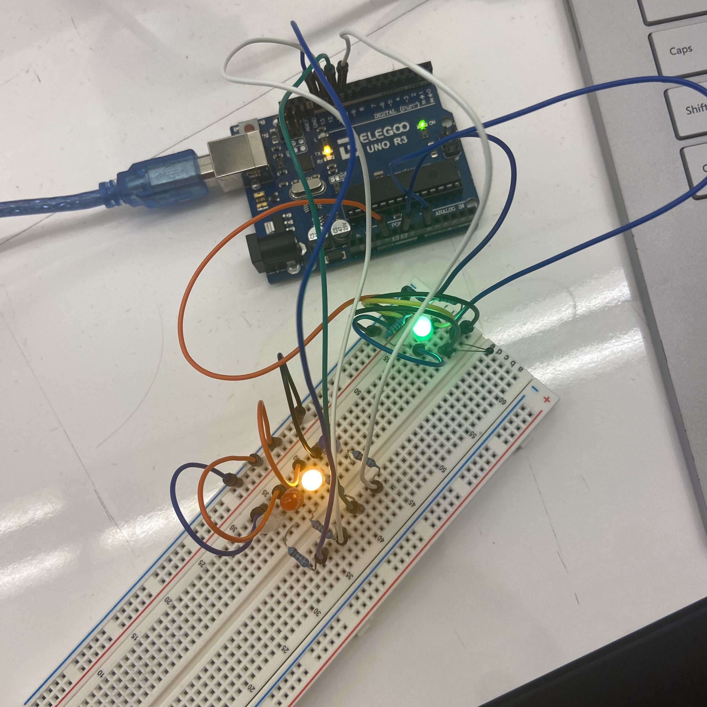
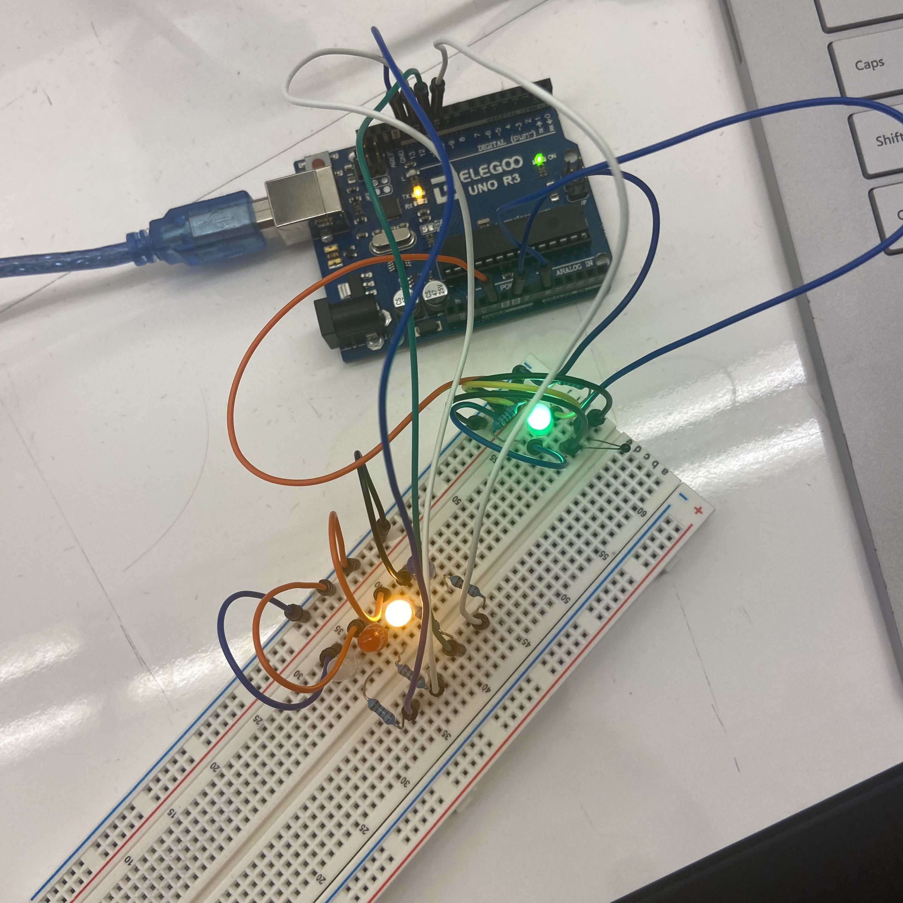
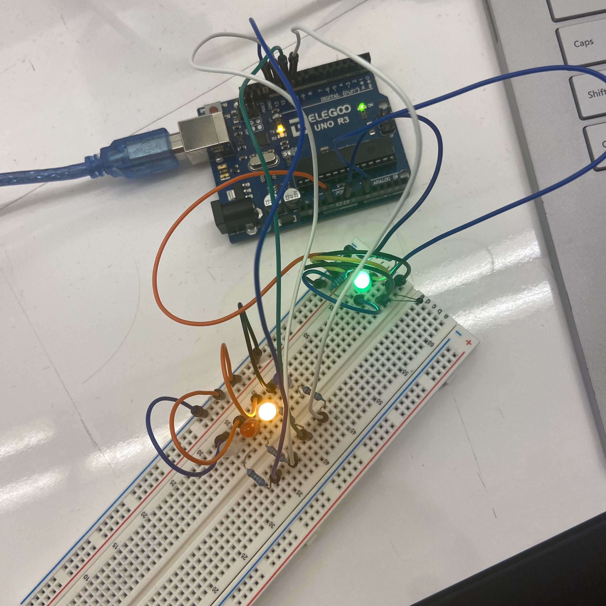

On the left you can see a gif of the assignment working. This is pre calibrated and starts with my finger on it to warm it up. Once I let go you can see it slowly fade down from white to red to yellow to blue then finally off. This shows us that the thermister is getting cooler. If I were to put my finger back on the thermister then the lights would slowly fade back up in the reverse order as it warmed.
On the right you can see a still picture of the wires. I tried to make it much cleaner compared to my last assignments. I think that I did a good job, but it does make it hard to see what is going on. Even when I was building it I had to double check I was putting wires where I thought I was.
// Andrew Doty wi24
// HCDE 439
// 1/26/2024
// constants won't change. They're used here to set pin numbers:
const int ledPin0 = 10; // the number of the LED pin
const int ledPin1 = 11; // the number of the LED pin
const int ledPin2 = 12; // the number of the LED pin
const int ledPin3 = 13; // the number of the LED pin
// Variables for calibrating the max, min, average, 25th percentile,
// 75th percentile, and current temp
int max = 0;
int min = 1023;
int mid = 0;
int mid25 = 0;
int mid75 = 0;
int temp = 0;
// Used by the map function to help in debugging which pattern of LEDs
// should be lit
int whichLED = 0;
void setup() {
// open the serial port at 9600 bps, allows us to see output in the console
Serial.begin(9600);
// initialize the LED pins as an output:
pinMode(ledPin0, OUTPUT); //
pinMode(ledPin1, OUTPUT);
pinMode(ledPin2, OUTPUT);
pinMode(ledPin3, OUTPUT);
// Calls the recalibrate function to find max, min, average, 25th percentile,
// 75th percentile, and current temp
recalibrate();
}
// Main loop that the code runs through
void loop() {
// Reads the value at the A0 port
temp = analogRead(A0);
// Maps the current temp to the range of possible led combos
whichLED = map(temp, min, max, 0, 7);
// Prints out information for debugging
Serial.print(temp);
Serial.print(" : ");
Serial.println(whichLED);
// Calls the displayTemp function which takes the current
// temperature and determines which leds to light up
displayTemp(temp);
}
// Based on the input temperature determines which LEDs should light up
void displayTemp(int temp) {
// If the temp is higher than min and at or lower than the 25th percentile
if (min < temp && temp <= mid25) {
// lights up blue LED
digitalWrite(ledPin0, HIGH);
}
// If the temp is between the 25th percentile and average (Inclusive)
if (mid25 <= temp && temp <= mid) {
// Light up yellow LED
digitalWrite(ledPin1, HIGH);
}
// If the temp is between the average and 75th percentile (Inclusive)
if (mid <= temp && temp <= mid75) {
// Light up the red LED
digitalWrite(ledPin2, HIGH);
}
// If the temp is at or higher than the 75th percentile
if (temp >= mid75) {
// Light up white LED
digitalWrite(ledPin3, HIGH);
}
// Add a delay for smoothing
delay(100);
// Turn off all the LEDs (for easy reset)
digitalWrite(ledPin0, LOW);
digitalWrite(ledPin1, LOW);
digitalWrite(ledPin2, LOW);
digitalWrite(ledPin3, LOW);
}
// Recalibrates the min and max using data over the next 10 seconds
void recalibrate() {
// loops through 100 times (100ms each time is 10 seconds total)
for (int time = 0; time < 100; time++) {
// Get the current temp from the A0 port
temp = analogRead(A0);
// Check if temp is new max
if (temp > max) {
// set min
max = temp;
}
// Check if temp is new min
if (temp < min) {
// set min
min = temp;
}
// wait 100 ms
delay(100);
}
// After the loop does some math to find the 25th, 50th, and 75th percentiles
mid = (max + min) / 2;
mid25 = (min + mid) / 2;
mid75 = (mid + max) /2;
}
I limited the current using these resistors becasue I wanted to prevent the LEDs from burning out. As with the last two assignments we know that using a 220 ohm resistor with 5v limits the current enough. So that is what I did for the main LEDs. For the green LED that is always on, I wanted it to be a lot dimmer, I used a 2k ohm resistor to make it a lot dimmer. It still allows for us to easily tell when it is on without being blinded by a bright light.
I limited the current using these resistors becasue I wanted to prevent the LEDs from burning out. As with the last two assignments we know that using a 220 ohm resistor with 5v limits the current enough. So that is what I did for the main LEDs. For the green LED that is always on, I wanted it to be a lot dimmer, so I used a 2k ohm resistor to make it a lot dimmer. It still allows for us to easily tell when it is on without being blinded by a bright light.
1: In your voltage divider, can the variable resistor be either R1 or R2 or does it need to be one or the other? Justify your answer with example calculations.

2: Given your schematic, circuit, and firmware, assuming the only thing that draws current is your LEDs, how long would your circuit run if powered by a 1200 mAh battery?
My three LEDs draw 15, 7.7, and 15 mA. Which is 37.7 mA. The battery is 1200 mAh. So we can just do 1200 / 37.7 which gives us 31.83 hours. This is assuming that all of the LEDs are on the whole time. If we want to know how long it would last with the button pressed and it running in a cycle we first should find out how long a cycle is and how much power it draws during it. (15mh * (.61sec * 1/3600 [to convert hours to seconds])) is .00254 mhA during the first and third LED. (7.7mh * (.61sec * 1/3600 [to convert hours to seconds])) is .00131 during the second LED. So in 1.83 seconds it uses .00639 mhA. 1200 / .00639 = 187793.42 which times 1.83 is 343,662 seconds. Which gives us our anwer of 95.5 hours. Which makes sense since it is 3 times longer than if they were all running at once. We could have just done 31.83 * 3 to get our answer, but then we would have missed out on a lot of fun math.